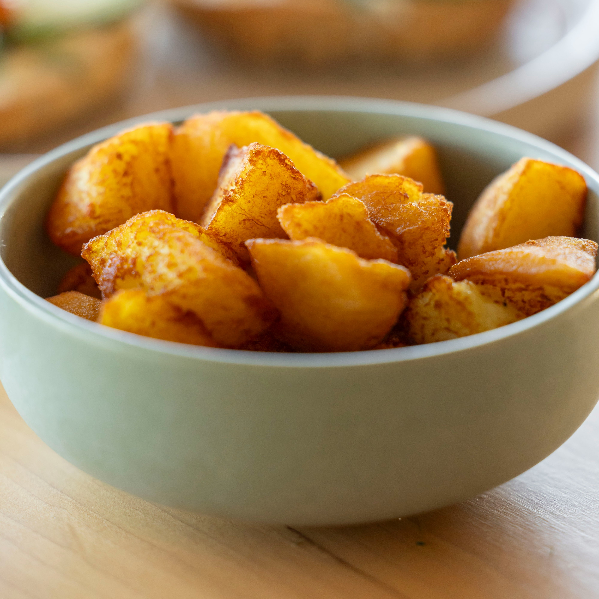

Air Fryer Potatoes

Ingredients
- 5 Golden Potatoes
- 1 Tbsp Olive Oil
- Garlic Powder
- Onion Powder
- Smoked Paprika
- Chilli Powder
- Cumin
- Salt
- Pepper
Steps
- Preheat air fryer at 190° C (374° F) for 5 min.
- Dice potatoes into chunks.
- Toss with olive oil and all spices.
- Season to taste with salt and pepper.
- Cook in air fryer for 15 min. Shake at halfway point.
Home